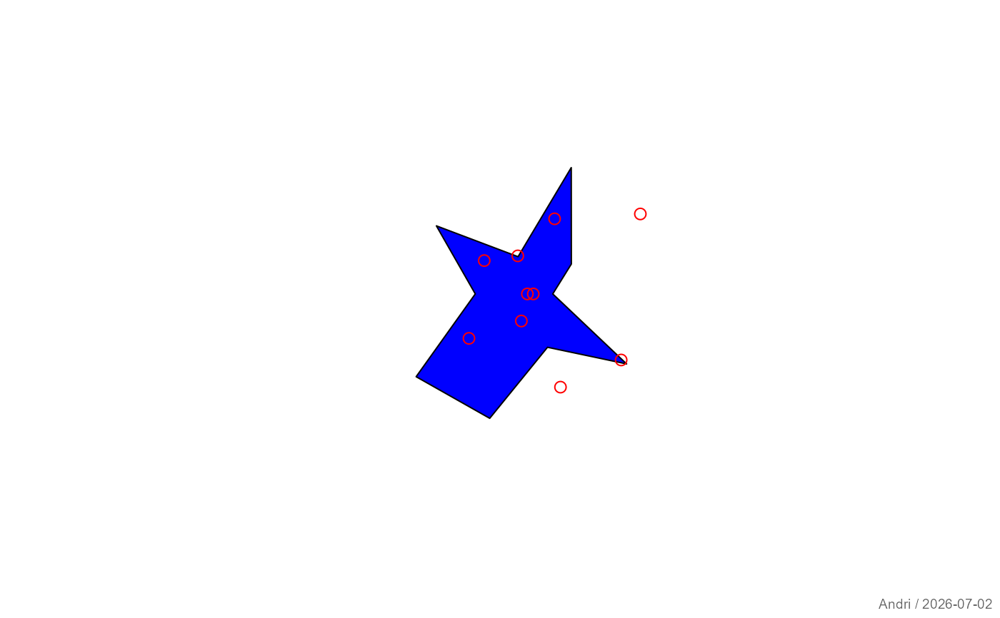

Creates a polar coordinate plot for one or multiple radial series.
Usage
plotPolar(
r,
theta = NULL,
main = NULL,
type = "p",
rlim = NULL,
col = NULL,
border = NULL,
add = FALSE,
...
)Arguments
- r
Numeric vector or matrix of radial values. Each row represents one series.
- theta
Optional numeric vector or matrix of angles (in radians). Must match the dimensions of
r. IfNULL, equally spaced angles are used.- main
Optional plot title.
- type
Character vector specifying plot type for each series:
- "p"
points
- "l"
polygon (connected and optionally filled)
- "h"
radial segments ("histogram"-style)
- rlim
Numeric limit for radial axis. If
NULL, determined automatically.- col
Color for points/lines.
- border
Color for border in case of type
polygon.- add
Logical; if
TRUE, adds to an existing plot.- ...
Additional graphical parameters passed to base plotting functions.
Details
The function supports plotting multiple radial series simultaneously.
Each row of r is treated as a separate series.
Angles are interpreted in radians. If theta is not provided,
points are distributed evenly over \([0, 2\pi)\).
Graphical parameters such as lwd, lty, pch,
cex, fill, and mar can be passed via ....
See also
Other plot.special:
plotBinaryTree(),
plotCirc(),
plotMiss(),
plotPropCI(),
plotTernary(),
plotTimeSeries(),
plotTreemap(),
plotWeb()
Examples
r <- matrix(runif(20), nrow = 2)
plotPolar(r, type = c("l", "p"), col = c("blue", "red"))
#> Warning: 'x' is NULL so the result will be NULL

# with custom angles
theta <- seq(0, 2*pi, length.out = 10)
plotPolar(r[1,], theta = theta, type = "h")
#> Warning: 'x' is NULL so the result will be NULL
#> Warning: 'x' is NULL so the result will be NULL